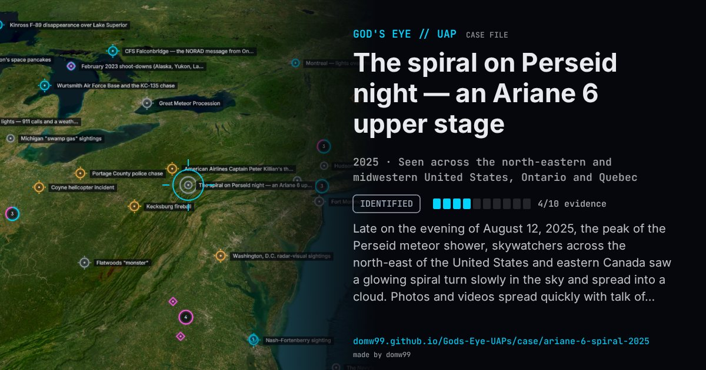

The spiral on Perseid night — an Ariane 6 upper stage

Late on the evening of August 12, 2025, the peak of the Perseid meteor shower, skywatchers across the north-east of the United States and eastern Canada saw a glowing spiral turn slowly in the sky and spread into a cloud. Photos and videos spread quickly with talk of UFOs; a Pennsylvania news site called it “a bizarrely lit up shape … shimmering across the sky in unmistakeable UFO fashion” and put it down to the Vulcan rocket launched from Cape Canaveral at 8:56 p.m. The real source had left French Guiana nineteen minutes earlier: the upper stage of an Ariane 6, which, after releasing a European weather satellite into polar orbit, made its disposal burn at 10:35 p.m., high over North America on its way north, and vented its remaining propellant while spinning.
Explanation
The upper stage of Ariane 6 flight VA264, launched from Kourou at 8:37 p.m. EDT with the MetOp-SG-A1 weather satellite. Heading north on its polar path, the stage made its disposal burn at 02:35 UTC (10:35 p.m. EDT) and then spun up and dumped its leftover propellant, which froze into a sunlit cloud, as the astronomer Jonathan McDowell explained. Early reports blamed the Vulcan launched from Florida the same evening, but that rocket flew east.
What was seen
Shape: A slowly turning, glowing spiral that spread into a fuzzy cloud
Witnesses: People watching the Perseid meteor shower from Iowa and Wisconsin to Pennsylvania, New York, Ontario and Quebec
Duration: Several minutes
Sources
- EarthSky — Strange spiral in the night sky: a rocket fuel dump (Aug 13, 2025)
- Patch — Mysterious object reported in PA skies Tuesday night (Aug 13, 2025)
- UPI via Yahoo News — Mystery light over U.S. East Coast sparks UFO speculation online
Browse
- United States
- 2020s
- Identified
- Photo and video cases
- Many independent witnesses
- Video footage
- Photographs
- Lights and fireballs